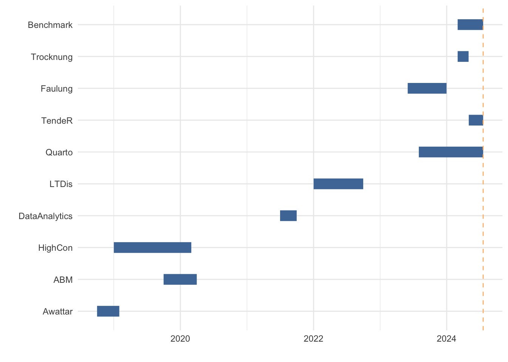

# Laden der benötigten Bibliothekenlibrary(tidyverse)
── Attaching core tidyverse packages ──────────────────────── tidyverse 2.0.0 ──
✔ dplyr 1.1.3 ✔ readr 2.1.4
✔ forcats 1.0.0 ✔ stringr 1.5.0
✔ ggplot2 3.4.3 ✔ tibble 3.2.1
✔ lubridate 1.9.2 ✔ tidyr 1.3.0
✔ purrr 1.0.2
── Conflicts ────────────────────────────────────────── tidyverse_conflicts() ──
✖ dplyr::filter() masks stats::filter()
✖ dplyr::lag() masks stats::lag()
ℹ Use the conflicted package (<http://conflicted.r-lib.org/>) to force all conflicts to become errors
library(plotly)
Attaching package: 'plotly'
The following object is masked from 'package:ggplot2':
last_plot
The following object is masked from 'package:stats':
filter
The following object is masked from 'package:graphics':
layout
Die Selbsteinschätzung der IT-Skills wird mithilfe des Quarto-Frameworks erstellt. Der Quellcode wird über GitHub bereitgestellt und anhand eines CI/CD-Prozess automatisch über GitHub-Pages als interaktives HTML-Dokument veröffentlicht:
Eine Zusammenfassung ist durch Abbildung 3 gegeben.
Bewertung der Programmierkenntnisse
Die Bewertung der Programmierkenntnisse erfolgt anhand eines quantifizierbaren Ansatzes. Grundlage ist die Selbsteinschätzung der in Projekten angewandten Kenntnisse in verschiedenen Programmiersprachen, Frameworks und Tools. Die Bewertung erfolgt auf einer Skala von 1 bis 10, wobei 1 für Grundkenntnisse und 10 für Expertenkenntnisse steht. Relevante Projekte und die darin angewandten Kenntnisse sind in Abbildung 1 dargestellt.
# create tribble with project dataprojects <-tribble(~Project, ~StartDate, ~EndDate,"Awattar", "2018-10-01", "2019-01-31","ABM", "2019-10-01", "2020-03-31","HighCon", "2019-01-01", "2020-03-01","DataAnalytics", "2021-07-01", "2021-09-30","LTDis", "2022-01-01", "2022-09-30","Quarto", "2023-08-01", "today","TendeR", "2024-05-01", "today","Faulung", "2023-06-01", "2023-12-31","Trocknung", "2024-03-01", "2024-04-30","Benchmark", "2024-03-01", "today",)# replace "today" with current date as characterprojects$EndDate[projects$EndDate =="today"] <-Sys.Date() %>%as.character()# convert dates to Date objectsprojects <- projects %>%mutate(StartDate =ymd(StartDate), EndDate =ymd(EndDate))# Convert Project to factor with levels in the correct orderprojects$Project <-factor(projects$Project, levels = projects$Project)
# Create Gantt chartfig <-ggplot(projects, aes(x = StartDate, xend = EndDate, y = Project, yend = Project)) +geom_segment(linewidth =5, color = minimal_palette["muted_blue"])+labs(x ="", y ="") +# add red line for todaygeom_vline(xintercept =Sys.Date(), color = minimal_palette["light_orange"], linetype ="dashed")# add theme minimalfig <- fig +theme_minimal()
Anhand Abbildung 2 wird der Zeitverlauf der Projekte dargestellt.
fig

Abbildung 2: Project Timeline Gantt Chart
Anhand des Enddatums der Projekte und der aktuellen Zeit wird ein Aktualitäts-Faktor der Fähigkeiten berechnet. Eine Fähigkeit, welche in den letzten 365 Tagen verwendet wurde, erhält den Faktor 1. Für jeden weiteren Tag, an dem der Skill nicht verwendet wurde, wird der Wert linear von 1 auf 0 reduziert.
calc_recency_factor <-function(date){# calculate difference in days diff <-as.numeric(Sys.Date() - date)# if the skill was practiced in the last 1 years return 1if (diff <=365) {return(1) } else {# linear decrease from 1 to 0 for skills practiced between 1 and 10 yearsreturn(max(0, 1- (diff -365) /3285)) }}
Zusammenfassend ergibt sich für jede Anwendung einer Fähigkeit ein zeitlich gewichteter Wert. Das Maximum jeder Fähigkeit wird als Skill-Level festgehalten und in Abbildung 3 dargestellt.